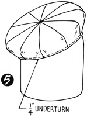

1952—How to Make Hats
by Ruby Carnahan
Sectional Beret
REQUIREMENTS
- 1/4 yard of material
- 1/4 yard lining
- 1/4 yard unsized elastic net
- 3/4 yard ribbon headband
CUTTING BERET SECTIONS
Trace and cut out pattern sections. Mark and number each section, exactly like pattern in book.
(Illus. 1) Lay pattern sections on unsized elastic net, draw a line around pattern sections on net, also mark net exactly as pattern is marked. Baste each section of elastic net on wrong side of material, and cut out material. Cut out ten sections of lining.
JOINING BERET
 (Illus. 2) Join No. 10 section and No. 1 section, seam sides marked F together,
making a 1/4" seam.
(Illus. 2) Join No. 10 section and No. 1 section, seam sides marked F together,
making a 1/4" seam.
(Illus. 3) Stitch and press seam open.
(Illus. 4) Continue adding sections according to numbers, joining No. 2 to No. 1 until all sections have been sewn together and seams steamed open. Stitch each section and press seam open before adding next section. Join, baste and stitch lining in same order as above. Press lining. Place in hat with seams facing elastic net.
FINISHING HEADSIZE
(Illus. 5) Turn bottom around headsize up 1/4", slip on Utility head block and steam around headsize patting material around headsize. Allow to dry on block. Finish inside headsize with a swirled headband ribbon.